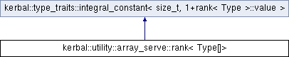

Inheritance diagram for kerbal::utility::array_serve::rank< Type[]>:

Additional Inherited Members | |
 Public Types inherited from kerbal::type_traits::integral_constant< size_t, 1+rank< Type >::value > Public Types inherited from kerbal::type_traits::integral_constant< size_t, 1+rank< Type >::value > | |
| typedef size_t | value_type |
| typedef integral_constant< size_t, val > | type |
| Public Member Functions inherited from kerbal::type_traits::integral_constant< size_t, 1+rank< Type >::value > | |
| KERBAL_CONSTEXPR | operator value_type () const |
| Static Public Attributes inherited from kerbal::type_traits::integral_constant< size_t, 1+rank< Type >::value > | |
| static constexpr size_t | value |
The documentation for this struct was generated from the following file:
- C:/Users/Peter/git/Kerbal/Kerbal/include/kerbal/utility/array_serve.hpp